Disponible
Luna
Perra juguetona, sociable y fanática de los paseos largos.
Adulta · 4 años · MedianaMe interesa LunaAdopción responsable
Conocé a los animales rescatados que están listos para empezar una nueva historia junto a vos.
En adopción
Cada perfil incluye su personalidad y necesidades para ayudarte a encontrar una compañía compatible con tu hogar y tu forma de vida.
Perra juguetona, sociable y fanática de los paseos largos.
Adulta · 4 años · MedianaMe interesa Luna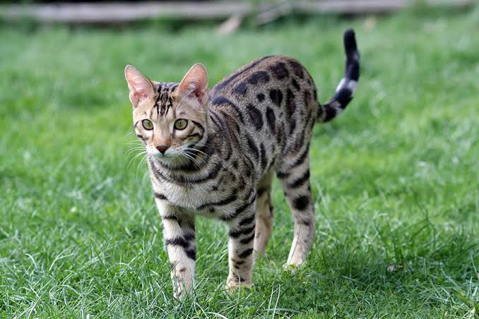
Gato tranquilo y cariñoso, ideal para un hogar sereno.
Joven · 2 años · Pequeño Me interesa Toby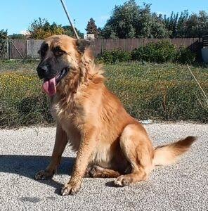
Mestizo noble y energético que disfruta aprender trucos.
Adulto · 3 años · Grande Me interesa Bruno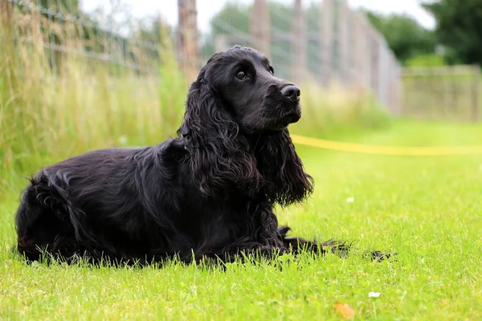
Perra dulce y atenta, busca una familia paciente.
Adulta · 5 años · Mediana Me interesa Mora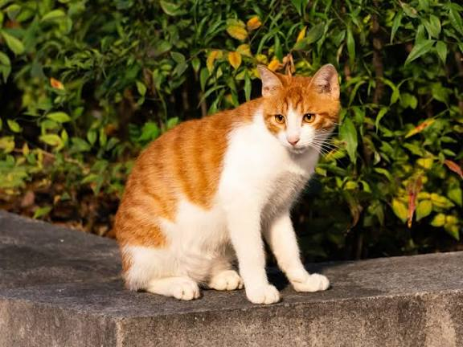
Curioso, independiente y listo para llenar tu casa de ronroneos.
Joven · 1 año · Pequeño Me interesa Simón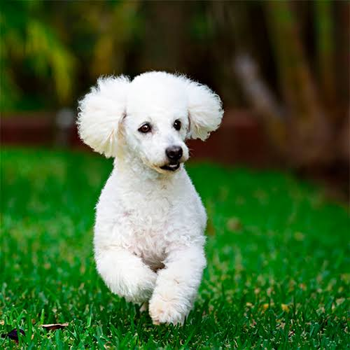
Pequeña, compañera y muy cómoda viviendo en departamento.
Adulta · 4 años · Pequeña Me interesa Olivia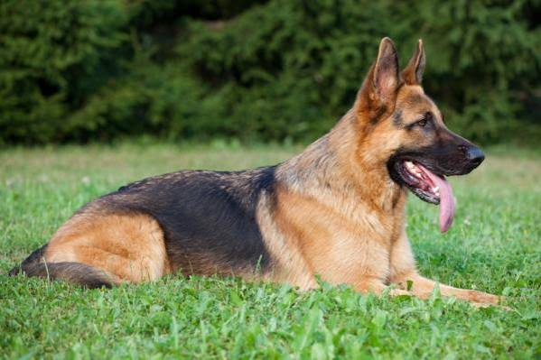
Amigable y activo, disfruta correr y compartir con personas.
Joven · 2 años · Grande Me interesa Rocco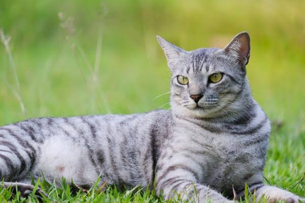
Gatita observadora que se gana la confianza con ternura.
Adulta · 3 años · Pequeña Me interesa Nina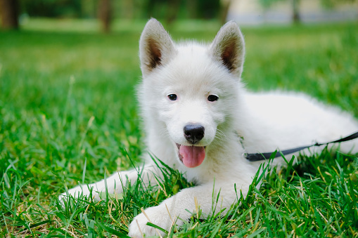
Un compañero alegre que adora los juegos y las caricias.
Cachorro · 8 meses · Mediano Me interesa Coco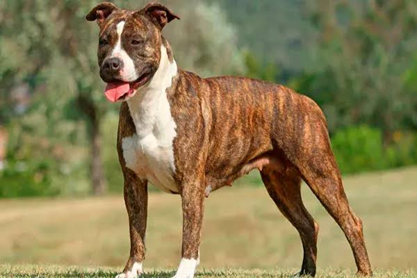
Serena y afectuosa, disfruta las rutinas tranquilas.
Adulta · 6 años · Mediana Me interesa Frida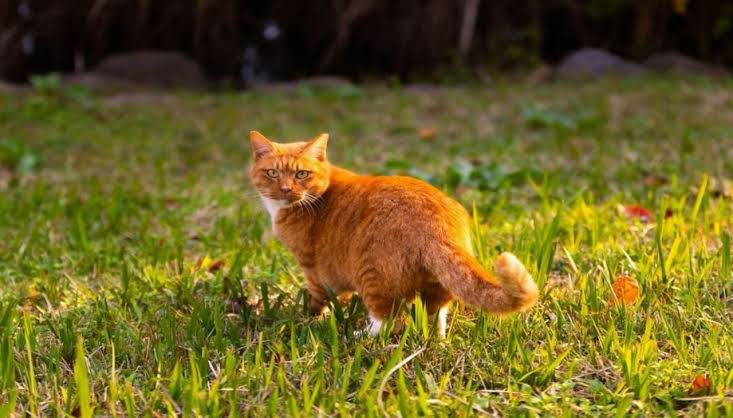
Gato simpático, juguetón y muy compañero con su familia.
Joven · 2 años · Pequeño Me interesa Milo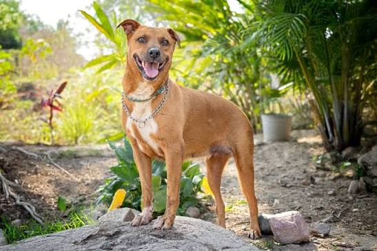
Leal y cariñosa, espera un hogar donde pueda sentirse segura.
Adulta · 5 años · Grande Me interesa CanelaHistorias que inspiran
Estas son algunas de las últimas mascotas que encontraron un hogar gracias a la comunidad de Huellas.
“Menta llegó tímida, pero en pocos días empezó a recorrer toda la casa. Nos enseñó que el amor también puede llegar con cuatro patas.”
— Valentina y Marcos
“El acompañamiento de Huellas hizo que todo fuera sencillo. Dante ahora es nuestro compañero inseparable de caminatas.”
— Julián
“Pipa se adaptó enseguida a nuestra familia. Estamos agradecidos por la confianza y por haberla esperado.”
— Camila y Sofía
“Nos orientaron para elegir una mascota compatible con nuestro ritmo. Olmo encontró su lugar y nosotros, un gran amigo.”
— Andrés
“La recibimos con algunos miedos, pero con paciencia se transformó en una perra feliz y llena de energía.”
— Natalia y Pedro
“Teo nos eligió desde el primer encuentro. Hoy cada mañana empieza con sus ronroneos y una dosis de alegría.”
— Martina
¿Encontraste una conexión?
Escribinos para coordinar una entrevista y una visita. Queremos que cada adopción sea responsable, acompañada y para toda la vida.
Quiero adoptarRevisá nuestro proceso, prepará tu hogar y pensá qué necesidades podés cubrir a largo plazo.
Ver guía de adopción